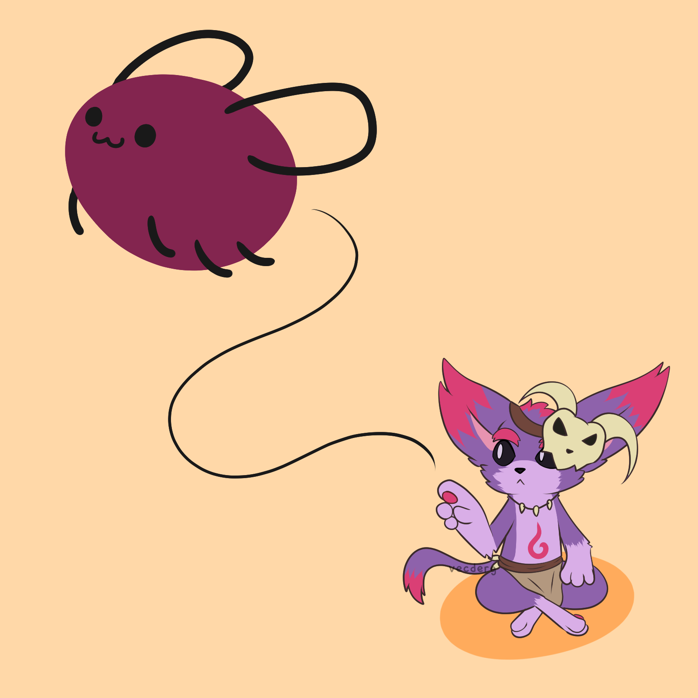

AFTER COHOST
October 3, 2024 - Published

Cohost is officially read-only, and we've all said our goodbyes. It's still taking a bit of time for me to process everything, but I've already said everything I've wanted to on the subject and feel relatively confident about how I've set up everything, so there's not much more point for me to linger on the subject (on the outside, at least). If you want to read my thoughts, it will be on my Cohost page until the website goes down, and I'm unsure if I have a need to publicly archive it. I did want to save the artpiece here, though.
There are a number of other developments. The most major one is that I finished all of RAPTOR's animations for DracoFighter 2! For those keeping count, that leaves 2 characters left for spriting, and 1 whose moveset needs to be finalized. Since spriting is mentally and physically taxing, I will be taking a break for an unknown amount of time, probably about a week. I'm still aiming to finish all the character sprites (barring VFX and minor tweaks) before the end of the year, but DracoFighter's development is still a little bit up in the air, making the goal more of a self-motivation thing than a practical thing.
Dasopya's development has recently been rather slow-going. I have made numerous minor adjustments/additions, but none that are particularly notable. I am hoping to release the cheat sheet soon after some more work. Motivation may be running low, but honestly it might just be due to my number of projects. My interest in learning more languages is increasing again, and I'm also tempted to start even more new projects, as is my eternal issue. Hopefully, my break will help me mentally reset and get back on track.
On a more silly note, I finished a drawing this morning after watching the entirety of Parkour Civilization. Genuinely peak fiction; I can't say enough about how incredible it was to watch on every level. For anyone that knows my sense of humor, I LOVE media that destroys the boundaries between being ironic and genuine, and I hope I remember this for the rest of my life. It's so nonsensical yet unexpectedly well-made, and wonderfully referential -- sometimes self-referential, but mostly just implementing Minecraft knowledge in a way that I love (the raw beef jump is infinitely funnier if you've ever actually done Minecraft parkour).
I'm already trying to insert phrases from the movie into my daily speech, personally being a fan of "one block vertical" and "in my entire life, I've never seen this in Parkour Civilization". I will confuse and annoy as many people as possible into watching the entire 2 hours (I did watch Part 2 today and enjoyed it, but I feel it's not super necessary and that the first was better). Anyway, my drawing is a bit larger than I'd like to host here, so you can see it on Itaku:
https://itaku.ee/images/943736
Other art pieces I finished were a ref sheet for my slug-dragon Doris and a commission for my good buddy TexanSoda. These are Itaku links, but I'm also reposting them on Bluesky. Sorry, putting up every link on every site here just isn't practical!!
I think that's everything important, but as an aside: MAN I wish there were like twice as many hours in a day. There's so much I want to do, but it never feels like there's enough time to do them. I wanna learn like 4 languages, make 3 games on Godot, a few more on PICO-8 and Picotron, finish my stories and articles and my art backlog...